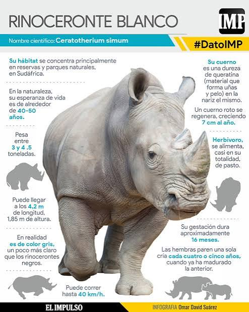

El rinoceronte es un mamifero herbivoro de gran tamano y cuerpo robusto.
Es uno de los animales terrestres mas grandes del mundo, superado solo por el elefante.
Su caracteristica mas conocida es el cuerno o los dos cuernos que tiene sobre el hocico.
Estos cuernos no son de hueso, sino que estan hechos de queratina compactada, la misma sustancia
que forma nuestras unas y pelo. Tienen una piel muy gruesa que casi no tiene pelo. En algunas variedades,
esta piel forma pliegues profundos que parecen una armadura. Sus patas son cortas y gruesas, y terminan en tres
dedos con pezunas. Su sentido de la vista es muy malo, pero lo compensan con un oido y un olfato excelentes.
Son animales que viven solos y pasan mucho tiempo revolcandose en el lodo para proteger su piel del sol y de los insectos.